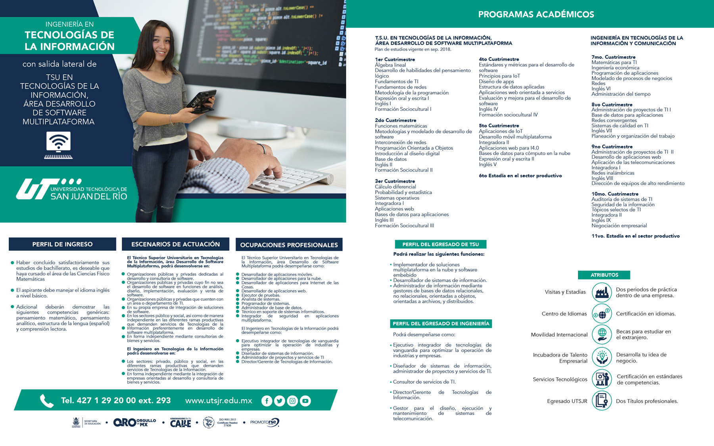

Escrito por Denisse Fortanelli Cantero
Soy Denisse Fortanelli y tengo 20 años. Actualmente soy estudiante de la Universidad Tecnológica de San Juan del Río y estudio la carrera de Tecnologías de la Infomación, voy en quinto cuatrimestre y hasta ahora he disfrutado mucho mi estancia en la escuela. Ésta etapa de mi vida ha sido totalmente diferente de las demás, puesto que ahora estoy estudiando una carrera para darle una dirección a mi vida y he aprendido mucho. He aprendido a hacer aplicaciones para Android, manejar base de datos SQL y muchos lenguajes de programación. En mi opinión creo que estoy en el lugar correcto, ya que, aunque a veces me dejan muchas tareas y otros días no puedo dormir por el exceso de trabajo, he aprendido a resistir la presión y cómo funciona la resiliencia en las personas. Creo que lo que estoy haciendo es algo que me va ser beneficioso en varios aspectos para mí futuro, pues primero que nada ésta es una carrera que se puede aplicar en diferentes áreas. A mí, en específico, me gustaría después de la ingeniería, hacer una especialidad en diseño digital y también quiero tomar un curso de Diseño Gráfico. En mi estancia en la universidad he podido conocer a grandes personas en quien me apoyo, ya sea para las tareas o para dudas que tenga. Yo pienso que el poder entablar amistades en esta edad es lo mejor de la vida, ya que no solo encuentras amigos, sino contactos con quien más adelante puedes unir fuerzas y llegar muy alto.
Hasta ahora siento que logrado salir adelante por haberme enfrentado a mis propios retos. ¿Me siento satisfecha con lo que he conseguido? Por el momento sí. Por ahora en la Universidad hasta ahora he aprendido muchas lecciones que me están ayudado a mejorar en diferenetes aspectos...cosa que si no estuviera en el lugar que estoy hoy en día no lo hubiese logrado.
